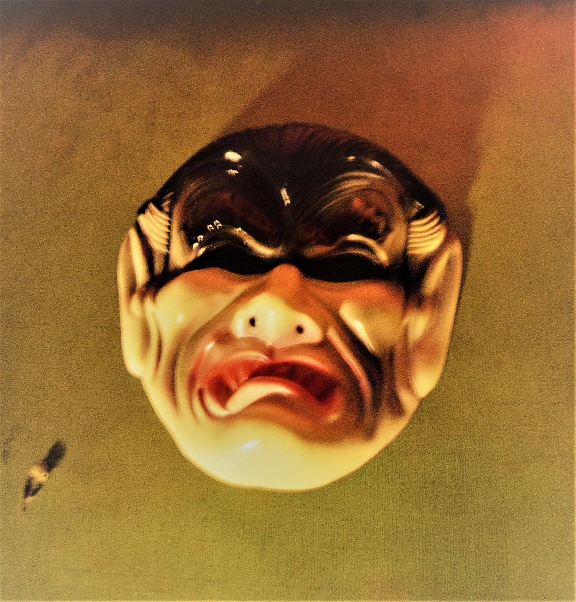

Bandcamp Friday Picks 3
Bandcamp Friday is August 1st, 2025. I always like to use these opportunities to both find/support Creative Commons music and thought I'd start sharing some of my picks.
If you're interested in CC music, be sure to checkout the tool I made for finding CC music on BC: cc-bc.

Little Miss Echo by Little Miss Echo
Little Miss Echo is the kind of find that makes me excited about digging through Bandcamp. Like listening to elevator music of 60s pop having a head-on collision with electronic tinged bedroom pop. It's just fun.
- Bandcamp link
- Released in 2024
- CC BY-NC

Vampire Hours by The Humms
Noisy and frantic, Vampire Hours blatently pulls from West Coast neo-psychedlic bands like Fuzz and Osees but somehow manages make things even weirder? Minute-by-minute it jumps from garage to bossa nova to Bowie-esque pop on a roller coaster of genre explorations.
- Bandcamp link
- Released in 2020
- CC BY-NC-ND

Spill by ELLiS·D
Listening to Spill, I'm not sure whether I should be dancing or moshing but I feel like I need to move. Upbeat post-punk with urgent, often to a point of desperation, vocals.
- Bandcamp link
- Released in 2025
- CC BY-NC-ND